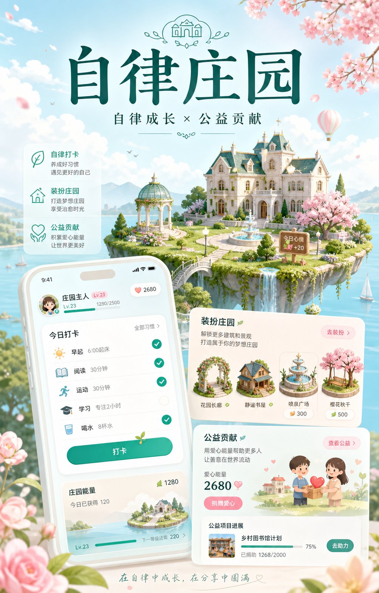

Portfolio Demo · AI Product
自律庄园
把日常自律行为转化为金币、庄园建设和公益贡献，让坚持从抽象口号变成可见反馈。

Problem
打卡工具的反馈太轻
用户完成习惯后只得到一个勾选状态，难以感知“今天的努力改变了什么”。项目用游戏化空间和公益能量补足持续行动的情绪回报。
6核心习惯入口
5综合公益方向
3房屋成长等级
1可跑通 MVP 闭环
Product Loop
自律行为被设计成闭环
打卡完成健身、冥想、阅读、学习、早睡、日记。
奖励获得金币、经验和公益能量，即时反馈行动价值。
建设购买装饰、拖动摆放、点击房门进出小屋。
贡献把公益能量投入动物救助、助学、灾区援助、环保、医疗援助。
MVP
首屏就是可交互产品
作品集没有停留在 PRD，而是把核心路径做成可体验网页：面试官打开链接后，可以直接点击、打卡、买物品、拖动布置和进出小屋。
今日打卡 0/6
金币、等级、房屋、经验、公益能量同步变化
点击房门进入小屋，点击室内门回到庭院
已购买物品可拖动，位置保存在本地
Validation
数据闭环回答项目深度
作品集内置新手引导、行为指标和迭代记录，用来说明后续如何验证激励机制、留存、公益转化和用户路径完成率。
核心路径完成率
打卡次数
公益投入
摆放保存
Public Benefit
公益机制先模拟，落地再合规
当前版本用公益能量模拟真实捐赠路径。真实落地阶段可接入合规公益机构、品牌配捐、公开凭证和用户可追踪的公益反馈。
用户行动完成自律任务，产生公益能量。
方向选择用户选择综合公益项目池中的支持方向。
公开凭证后续接入合规机构与配捐记录，形成可信闭环。
Interview Story
这个项目证明什么
它证明我能从用户痛点出发，设计核心闭环，做出可交互 MVP，并用数据口径和迭代记录解释产品效果。
下一步：接入真实用户测试，记录 7 日留存、公益能量使用率、装饰购买率和房屋升级率，把作品从 demo 推到验证型项目。